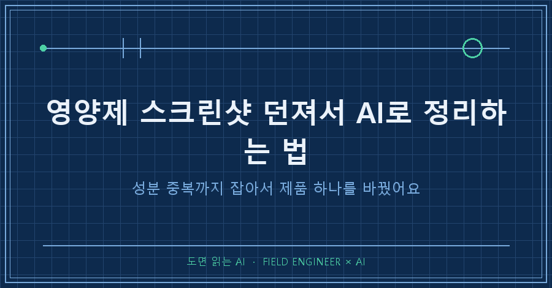
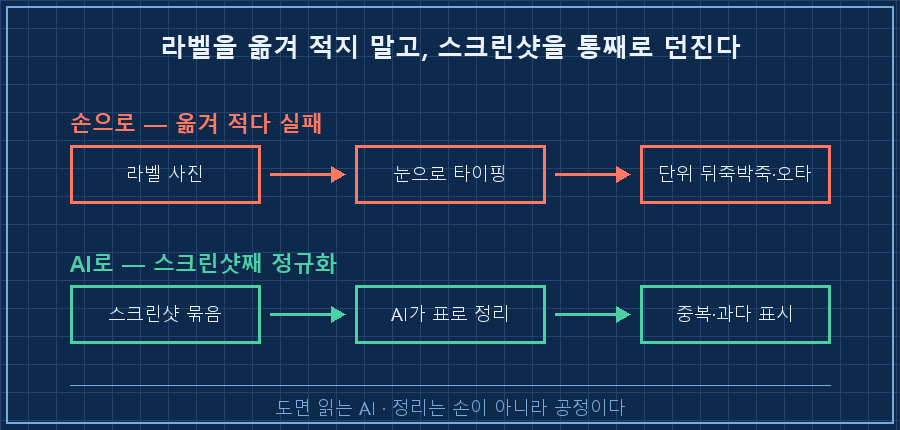
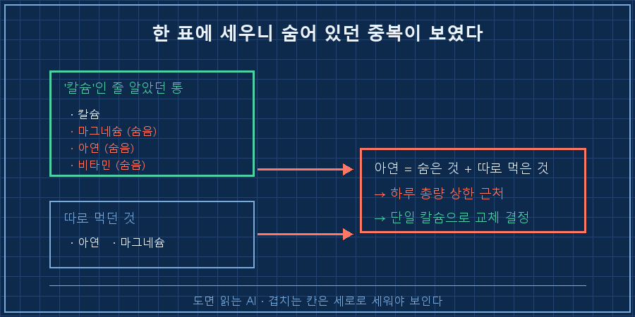

서랍에 영양제가 열 통쯤 굴러다니는데, 뭘 언제 몇 알 먹어야 하는지 매번 헷갈리시죠.
저는 그걸 각 제품 라벨 사진 찍어서 엑셀로 옮기다가, 몇 통 하고 그냥 관뒀어요. 너무 손이 많이 가더라고요.
결론부터 말씀드릴게요.
영양제는 라벨을 하나씩 옮겨 적을 게 아니라, 구매내역 스크린샷을 통째로 AI한테 던져서 성분·용량·타이밍을 한 표로 뽑게 하면 됩니다.
그러면 사람 눈엔 안 보이던 성분 중복까지 AI가 집어내요. 실제로 저는 이걸로 제품 하나를 교체했어요.
오늘은 제가 열 종짜리 영양제를 AI한테 어떻게 정리시켰는지, 따라 할 수 있게 순서대로 풀어볼게요.
(⚠️ 미리: 이건 제 개인 정리 사례지 의학적 조언이 아니에요. 복용량·조합 판단은 전문가나 약사와 상의하세요.)
1. 왜 손으로 정리하면 매번 실패하냐면요
제조 현장에서 제어판넬을 15년째 만지는 사람입니다. 요즘은 그 일 상당 부분을 AI랑 같이 해요.
그러다 보니 습관이 생겼어요 — 반복되는 정리 작업이 보이면 일단 AI한테 던져봅니다.
영양제가 딱 그런 일이었어요.
제품마다 성분표 형식이 다 달라요.
어떤 건 mg, 어떤 건 IU, 어떤 건 하루 2알 기준, 어떤 건 1알 기준.
이걸 사람이 눈으로 맞춰 표로 옮기면 꼭 한두 칸을 틀립니다. 저는 마그네슘 알 수를 실제로 한 번 잘못 적었어요.

2. 스크린샷을 그냥 통째로 던지는 게 핵심이에요
시작은 단순했어요. 쇼핑앱 구매내역 화면과 각 제품 상세 스크린샷을 여러 장 찍어서, 정리하지 않고 그대로 AI한테 올렸습니다.
정성껏 타이핑해서 넘길 필요가 없어요. 요즘 AI는 이미지 속 글자를 읽거든요.
제가 실제로 넘긴 건 구매내역 화면과 제품별 성분 사진이었고, 종수는 열 종쯤 됐어요.
그리고 이렇게 시켰어요.
이 스크린샷들에 있는 영양제 전부를,
제품명 / 핵심 성분 / 1회 용량 / 하루 섭취 알수 / 권장 복용 타이밍
이 5개 열로 표를 만들어줘. 단위(mg·IU)는 그대로 살리고,
같은 성분이 여러 제품에 겹치면 따로 표시해줘.포인트는 마지막 줄이에요.
"표로 정리해줘"까지만 하면 예쁜 표는 나오는데, 제가 진짜 알고 싶던 겹치는 성분은 안 짚어줘요.
"겹치면 표시해줘"를 명시해야 AI가 중복을 따로 찾기 시작합니다.
3. 사람 눈엔 안 보이던 중복이 튀어나왔어요
여기서 진짜 소득이 나왔어요.
AI가 정리한 표를 보니, 제가 '칼슘 제품'이라고 믿고 먹던 게 사실은 칼슘 하나만 든 게 아니었어요.
그 한 통 안에 마그네슘도, 아연도, 비타민도 같이 들어 있는 복합 제품이었던 거죠.
문제는 제가 마그네슘과 아연을 별도로 또 먹고 있었다는 거예요.
그러니까 칼슘 통에 숨어 있던 아연 + 따로 먹던 아연이 합쳐지면서, 아연 총량이 하루 권장 상한 근처까지 올라가 있었어요.
라벨 열 개를 눈으로 훑을 땐 전혀 안 보였어요. 한 표에 세로로 세워놓으니 그제야 겹치는 칸이 보이더라고요.

그래서 결정은 간단해졌어요.
그 복합 칼슘 제품을 성분이 겹치지 않는 단일 칼슘 제품으로 교체하기로요.
재고 다 먹고 나서 순수 칼슘 제품으로 바꾸니, 아연·마그네슘 중복이 자연스럽게 풀렸어요.
이게 AI로 정리해서 얻은 실제 결과예요. 정보를 예쁘게 모은 게 아니라, 먹는 걸 하나 바꾼 것.
4. 따라 하는 순서 (2026년 8월 기준)
유료 도구 없이 됩니다. 이미지를 읽는 AI면 다 돼요. 순서만 지키세요.
1. 구매내역과 제품별 성분 사진을 스크린샷으로 모은다. 쇼핑앱 주문내역 화면 + 각 제품 라벨/상세 성분 컷. 굳이 예쁘게 안 찍어도 글자만 읽히면 됩니다.
2. 정리하지 말고 그대로 AI한테 올린다. 타이핑 금지가 오히려 핵심이에요. 사람이 옮겨 적는 순간 오타·단위 실수가 끼거든요.
3. 표의 '열'을 콕 집어 지시한다. 제품명 / 성분 / 1회 용량 / 하루 알수 / 타이밍. 그리고 반드시 "겹치는 성분은 따로 표시해줘"를 붙인다. 이 한 줄이 중복 탐지를 켜는 스위치예요.
4. 총량과 상한을 물어본다. "성분별 하루 총합을 내주고, 일반 권장 상한을 넘는 게 있으면 알려줘." 단, 나온 숫자는 참고용이고 확정은 사람이 검증합니다.
5. 결과를 눈으로 검증한다. AI가 읽은 성분·용량이 실제 라벨과 맞는지 한 통이라도 대조해봐요. 사진이 흐리면 AI가 숫자를 잘못 읽기도 하거든요.
저도 4번에서 한 번 걸렸어요.
처음엔 "이거 먹어도 돼?"라고 두루뭉술하게 물었더니 원론적인 답만 돌아왔어요.
"성분별 하루 총합을 숫자로 내고, 상한 넘는 것만 콕 집어줘"라고 형태를 지정하고 나서야 쓸 만한 표가 나왔어요.
AI는 원하는 결과물의 '모양'을 집어줘야 제대로 일합니다.
5. 이렇게 정리하니 뭐가 달라졌나
가장 큰 변화는 영양제를 '느낌'이 아니라 '표'로 보게 된 거예요.
전엔 "이거 좋다더라"로 하나씩 늘렸는데, 이젠 새 걸 살 때 기존 표에 얹어보고 성분이 겹치는지부터 확인해요.
물론 한계도 분명해요.
AI가 사진 속 작은 글씨를 잘못 읽을 때가 있어서, 나온 숫자를 그냥 믿으면 안 돼요.
그리고 적정 복용량이나 조합이 내 몸에 맞는지는 AI가 판단할 영역이 아니에요. 그건 약사·전문가 몫이고, AI는 '흩어진 걸 한눈에 모아 겹치는 걸 보여주는' 데까지만 잘합니다.
저는 딱 그 선까지만 씁니다.
자주 묻는 질문
Q. 영양제 여러 개 같이 먹어도 되나요?
성분이 겹치는지부터 확인하는 게 먼저예요. 서로 다른 제품에 같은 성분(예: 아연·마그네슘)이 중복되면 하루 총량이 상한을 넘을 수 있거든요. 스크린샷을 AI에 모아 성분별 총합을 뽑아보면 겹침이 한눈에 보여요. 다만 최종 복용 판단은 약사·전문가와 상의하세요.
Q. 라벨을 일일이 타이핑해서 넘겨야 하나요?
아니요. 오히려 타이핑이 실수의 원인이에요. 이미지를 읽는 AI라면 스크린샷을 그대로 올려도 성분표를 읽어냅니다. 사람이 옮겨 적는 단계를 빼는 게 이 방법의 핵심이에요.
Q. AI가 알려준 용량, 그대로 믿어도 되나요?
아니요. 사진이 흐릿하면 숫자를 잘못 읽고, 권장량·상한도 개인 상태에 따라 달라요. AI 결과는 '정리·중복 발견'까지만 신뢰하고, 실제 복용량과 안전성은 반드시 전문가 확인을 거치세요. 이 글도 제 개인 정리 사례일 뿐 의학적 조언이 아닙니다.
정리하면요
영양제 정리는 라벨 옮겨 적기가 아니라, 스크린샷 던지기예요.
| 볼 것 | 손으로 할 때 | AI로 할 때 |
|---|---|---|
| 성분표 옮기기 | 단위 뒤죽박죽·오타 | 스크린샷째 읽어 표로 정규화 |
| 성분 중복 | 라벨 열 개론 안 보임 | 세로로 세워 겹치는 칸 표시 |
| 하루 총량 | 계산 귀찮아 생략 | 총합+상한 초과 표시(참고용) |
| 결과 | 그냥 계속 먹음 | 겹치는 제품 교체 결정 |
핵심은 하나예요. 생활 속 흩어진 데이터(스크린샷)를 AI한테 통째로 넘겨 한 표로 세우는 것.
그 표가 서면 사람 눈엔 안 보이던 게 보이고, '뭘 바꿀지'가 정해집니다.
단, AI는 정리까지고 판단은 사람이라는 선만 지키면요.
서랍에 굴러다니는 영양제, 오늘 밤 스크린샷 몇 장 찍어서 AI한테 한 표로 세워보시는 것부터 시작해보세요.
이렇게 생활 데이터를 AI로 구조화한 기록은 makefield.ai에 하나씩 모아두는 중이에요.
---
태그: #영양제AI정리 #영양제성분중복 #영양제같이먹어도되나 #스크린샷AI분석 #영양제조합 #영양제타이밍 #AI활용법 #생활데이터AI #나만의AI #개인루틴자동화 #생성형AI #AI공부법 #현장엔지니어 #제조업AI #도면읽는AI